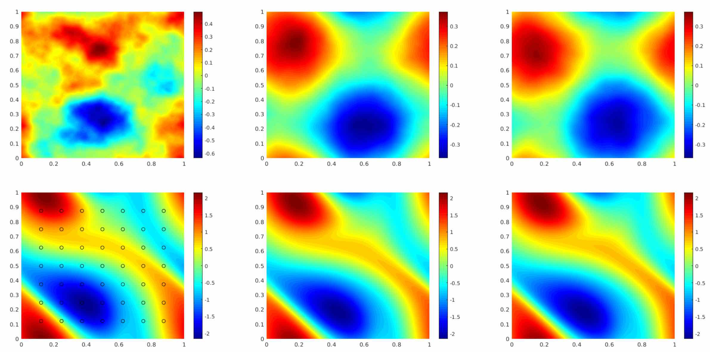

Fourier Neural Operators
This page (which takes about 10 minutes to read), introduces the Fourier neural operator that solves a family of PDEs from scratch. It the first work that can learn resolution-invariant solution operators on Navier-Stokes equation, achieving state-of-the-art accuracy among all existing deep learning methods and up to 1000x faster than traditional solvers. Also check out the paper [1] and article [2].
Operator learning
Thinking in continuum gives us an advantage when dealing with PDE. We want to design mesh-indepedent, resolution-invariant operators.
Problems in science and engineering involve solving partial differential equations (PDE) systems. Unfortunately, these PDEs can be very hard. Traditional PDE solver such as finite element methods (FEM) and finite difference methods (FDM) rely on discretizing the space into a very fine mesh. And it can be slow and inefficient.
In the previous doc, we introduced the neural operators that use neural networks to learn the solution operators for PDEs. That is, given the initial conditions or the boundary conditions, the neural network directly output the solution, kind of like an image-to-image mapping.
The neural operator is mesh-independent, different from the standard deep learning methods such as CNN. It can be trained on one mesh and evaluated on another. By parameterizing the model in function space, it learns the continuous function instead of discretized vectors.
Conventional PDE solvers
Neural operators
Solve one instance
Learn a family of PDE
Require the explicit form
Black-box, data-driven
Speed-accuracy trade-off on resolution
Resolution-invariant, mesh-invariant
Slow on fine grids; fast on coarse grids
Slow to train; fast to evaluate
Operator learning can be taken as an image-to-image problem. The Fourier layer can be viewed as a substitute for the convolution layer.
Framework of Neural Operators
Just like neural networks consist of linear transformations and non-linear activation functions, neural operators consist of linear operators and non-linear activation operators.
Let \(v\) be the input vector, \(u\) be the output vector. A standard deep neural network can be written in the form:
where \(K\) are the linear layer or convolution layer, and \(\sigma\) are the activation function such as ReLU.
The neural operator shares a similar framework. It’s just now \(v\) and \(u\) are functions with different discretizations (say, some inputs are \(28 \times 28\), some are \(256 \times 256\), and some are in triangular mesh). To deal with functions input, the linear transformation \(K\) is formulated as an integral operator. Let \(x, y\) be the points in the domain.
The map \(K: v_{t} \mapsto v_{t+1}\) is parameterized as
Where \(\kappa\) is a kernel function and \(W\) is the bias term.
For the Fourier neural operator, we formulate \(K\) as a convolution and implement it by Fourier transformation.
Fourier Layer
The real-world images have lots of edges and shapes, so CNN can capture them well with local convolution kernel. On the other hand, the inputs and outputs of PDEs are continuous functions. It is more efficient to represent them in Fourier space and do global convolution.
There are two main motivations to use Fourier transformation. First, it’s fast. A full standard integration of \(n\) points has complexity \(O(n^2)\), while convolution via Fourier transform is quasilinear. Second, it’s efficient. The inputs and outputs of PDEs are continuous functions. So it’s usually more efficient to represent them in Fourier space.
The convolution in the spatial domain is equivalent to the pointwise multiplication in the Fourier domain. To implement the (global) convolution operator, we first do a Fourier transform, then a linear transform, and an inverse Fourier transform, As shown in the top part of the figure:

- The Fourier layer just consists of three steps:
Fourier transform \(\mathcal{F}\)
Linear transform on the lower Fourier modes \(R\)
Inverse Fourier transform \(\mathcal{F}^{-1}\)
We then add the output of the Fourier layer with the bias term \(W v\) (a linear transformation) and apply the activation function \(\sigma\). Simple as it is.
In practice, it’s usually sufficient to only take the lower frequency modes and truncate out these higher frequency modes. Therefore, we apply the linear transformation on the lower frequency modes and set the higher modes to zeros.
Notice the activation functions shall be applied on the spatial domain. They help to recover the Higher frequency modes and non-periodic boundary which are left out in the Fourier layers. Therefore it’s necessary to the Fourier transform and its inverse at each layer.
Implementation
We can easily create a 2d Fourier layer using neuralop as follows:
from neuralop.models.spectral_convolution import FactorizedSpectralConv
fourier_layer = FactorizedSpectralConv(in_channels=in_channels, out_channels=out_channels, n_modes=(modes1, modes2))
To illustrate the implementation details of the Fourier layer, we provide a simple implementation from scratch that is equivalent to the above code based on PyTorch’s fast Fourier transform torch.fft.rfft() and torch.fft.irfft().
import torch
import torch.nn as nn
class SpectralConv2d(nn.Module):
def __init__(self,
in_channels, # Number of input channels
out_channels, # Number of output channels
modes1, # Number of Fourier modes to multiply in the first dimension
modes2): # Number of Fourier modes to multiply in the second dimension
super(SpectralConv2d, self).__init__()
self.in_channels = in_channels
self.out_channels = out_channels
self.modes1 = modes1
self.modes2 = modes2
self.scale = (1 / (in_channels * out_channels))
self.weights1 = nn.Parameter(self.scale * torch.rand(in_channels, out_channels, self.modes1, self.modes2, dtype=torch.cfloat))
self.weights2 = nn.Parameter(self.scale * torch.rand(in_channels, out_channels, self.modes1, self.modes2, dtype=torch.cfloat))
def forward(self, x):
batchsize = x.shape[0]
#Compute Fourier coeffcients
x_ft = torch.fft.rfft2(x)
# Multiply relevant Fourier modes
out_ft = torch.zeros(batchsize, self.out_channels, x.size(-2), x.size(-1)//2 + 1, dtype=torch.cfloat, device=x.device)
out_ft[:, :, :self.modes1, :self.modes2] = \
self.compl_mul2d(x_ft[:, :, :self.modes1, :self.modes2], self.weights1)
out_ft[:, :, -self.modes1:, :self.modes2] = \
self.compl_mul2d(x_ft[:, :, -self.modes1:, :self.modes2], self.weights2)
#Return to physical space
x = torch.fft.irfft2(out_ft, s=(x.size(-2), x.size(-1)))
return x
def compl_mul2d(self, input, weights):
# (batch, in_channel, x,y ), (in_channel, out_channel, x,y) -> (batch, out_channel, x,y)
return torch.einsum("bixy,ioxy->boxy", input, weights)
where the input x has the shape (N,C,H,W),
self.weights1 and self.weights2 are the weight matrices;
self.mode1 and self.mode2 truncate the lower frequency modes;
and compl_mul2d() is the matrix multiplication for complex numbers.

Filters in convolution neural networks are usually local. They are good to capture local patterns such as edges and shapes. Fourier filters are global sinusoidal functions. They are better for representing continuous functions.
Higher frequency modes and non-periodic boundary The Fourier layer on its own loses higher frequency modes and works only with periodic boundary conditions. However, the Fourier neural operator as a whole does not have these limitations (examples shown in the experiments). The encoder-decoder structure helps to recover the higher Fourier modes. And the bias term \(W\) helps to recover the non-periodic boundary.
Complexity The Fourier layer has a quasilinear complexity. Denote the number of points (pixels) \(n\) and truncating at \(k_{max}\) frequency modes. The multiplication has complexity \(% <![CDATA[ O(k_{max}) < O(n) %]]>\) . The majority of the computational cost lies in computing the Fourier transform and its inverse. General Fourier transforms have complexity \(O(n^2)\), however, since we truncate the series the complexity is in fact \(O(n k_{max})\), while the FFT has complexity \(O(n \log n)\).
resolution-invariance”>Resolution-invariance The Fourier layers are discretization-invariant, because they can learn from and evaluate functions which are discretized in an arbitrary way. Since parameters are learned directly in Fourier space, resolving the functions in physical space simply amounts to projecting on the basis of wave functions which are well-defined everywhere on the space. This allows us to transfer among discretization. If implemented with standard FFT, then it will be restricted to uniform mesh, but still resolution-invariant.
Experiments
Burgers Equation The 1-d Burgers’ equation is a non-linear PDE with various applications including modeling the one-dimensional flow of a viscous fluid. It takes the form
with periodic boundary conditions where \(u_0 \in L^2_{\text{per}}((0,1);\mathbb{R})\) is the initial condition and \(\nu \in \mathbb{R}_+\) is the viscosity coefficient. We aim to learn the operator mapping the initial condition to the solution at time one, defined by \(u_0 \mapsto u(\cdot, 1)\) for any \(r > 0\).
Networks
s=256
s=512
s=1024
s=2048
s=4096
s=8192
FCN
0.0958
0.1407
0.1877
0.2313
0.2855
0.3238
PCA+NN
0.0398
0.0395
0.0391
0.0383
0.0392
0.0393
LNO
0.0212
0.0221
0.0217
0.0219
0.0200
0.0189
FNO
0.0149
0.0158
0.0160
0.0146
0.0142
0.0139
Darcy Flow
We consider the steady-state of the 2-d Darcy Flow equation on the unit box which is the second order, linear, elliptic PDE
with a Dirichlet boundary where \(a \in L^\infty((0,1)^2;\mathbb{R}_+)\) is the diffusion coefficient and \(f \in L^2((0,1)^2;\mathbb{R})\) is the forcing function. This PDE has numerous applications including modeling the pressure of the subsurface flow, the deformation of linearly elastic materials, and the electric potential in conductive materials. We are interested in learning the operator mapping the diffusion coefficient to the solution, defined by \(a \mapsto u\). Note that although the PDE is linear, the solution operator is not.
Networks
s=85
s=141
s=211
s=421
FCN
0.0253
0.0493
0.0727
0.1097
PCA+NN
0.0299
0.0298
0.0298
0.0299
RBM
0.0244
0.0251
0.0255
0.0259
LNO
0.0520
0.0461
0.0445
FNO
0.0108
0.0109
0.0109
0.0098

Benchmarks for time-independent problems (Burgers and Darcy):
NN: a simple point-wise feedforward neural network.
RBM: the classical Reduced Basis Method (using a POD basis).
FCN: a the-state-of-the-art neural network architecture based on Fully Convolution Networks.
PCANN: an operator method using PCA as an autoencoder on both the input and output data and interpolating the latent spaces with a neural network.
GNO: the original graph neural operator.
MGNO: the multipole graph neural operator.
LNO: a neural operator method based on the low-rank decomposition of the kernel.
FNO: the newly purposed Fourier neural operator.
Navier-Stokes Equation
We consider the 2-d Navier-Stokes equation for a viscous, incompressible fluid in vorticity form on the unit torus:
where \(u\) is the velocity field, \(w = \nabla \times u\) is the vorticity, \(w_0\) is the initial vorticity,<br /> \(\nu\) is the viscosity coefficient, and \(f\) is the forcing function. We are interested in learning the operator mapping the vorticity up to time 10 to the vorticity up to some later time \(T > 10\), defined by \(w|_{(0,1)^2 \times [0,10]} \mapsto w|_{(0,1)^2 \times (10,T]}\). We experiment with the viscosities \(\nu = 1\mathrm{e}{-3}, 1\mathrm{e}{-4}, 1\mathrm{e}{-5}\), decreasing the final time \(T\) as the dynamic becomes chaotic.
Configs
Parameters
Time per epoch
nu=1e-3
nu=1e-4
nu=1e-5
FNO-3D
6,558,537
38.99s
0.0086
0.0820
0.1893
FNO-2D
414,517
127.80s
0.0128
0.0973
0.1556
U-Net
24,950,491
48.67s
0.0245
0.1190
0.1982
TF-Net
7,451,724
47.21s
0.0225
0.1168
0.2268
ResNet
266,641
78.47s
0.0701
0.2311
0.2753

Benchmarks for time-dependent problems (Navier-Stokes):
ResNet: 18 layers of 2-d convolution with residual connections.
U-Net: A popular choice for image-to-image regression tasks consisting of four blocks with 2-d convolutions and deconvolutions.
TF-Net: A network designed for learning turbulent flows based on a combination of spatial and temporal convolutions.
FNO-2d: 2-d Fourier neural operator with an RNN structure in time.
FNO-3d: 3-d Fourier neural operator that directly convolves in space-time.
The FNO-3D has the best performance when there is sufficient data (\(\nu=1\mathrm{e}{-3}, N=1000\) and \(\nu=1\mathrm{e}{-4}, N=10000\)). For the configurations where the amount of data is insufficient (\(\nu=1\mathrm{e}{-4}, N=1000\) and \(\nu=1\mathrm{e}{-5}, N=1000\)), all methods have \(>15\%\) error with FNO-2D achieving the lowest. Note that we only present results for spatial resolution \(64 \times 64\) since all benchmarks we compare against are designed for this resolution. Increasing it degrades their performance while FNO achieves the same errors.
FNO-2D, U-Net, TF-Net, and ResNet all use 2D-convolution in the spatial domain and recurrently propagate in the time domain (2D+RNN). On the other hand, FNO-3D performs convolution in space-time.
Bayesian Inverse Problem
In this experiment, we use a function space Markov chain Monte Carlo (MCMC) method to draw samples from the posterior distribution of the initial vorticity in Navier-Stokes given sparse, noisy observations at time \(T=50\). We compare the Fourier neural operator acting as a surrogate model with the traditional solvers used to generate our train-test data (both run on GPU). We generate 25,000 samples from the posterior (with a 5,000 sample burn-in period), requiring 30,000 evaluations of the forward operator.
{kind=link}
The top left panel shows the true initial vorticity while the bottom left panel shows the true observed vorticity at \(T=50\) with black dots indicating the locations of the observation points placed on a \(7 \times 7\) grid. The top middle panel shows the posterior mean of the initial vorticity given the noisy observations estimated with MCMC using the traditional solver, while the top right panel shows the same thing but using FNO as a surrogate model. The bottom middle and right panels show the vorticity at \(T=50\) when the respective approximate posterior means are used as initial conditions.
Conclusion
We propose a neural operator based on Fourier Transformation. It is the first work that learns the resolution-invariant solution operator for the family of Navier-Stokes equation in the turbulent regime, where previous graph-based neural operators do not converge. By construction, the method shares the same learned network parameters irrespective of the dis- cretization used on the input and output spaces. It can do zero-shot super-resolution: trained on a lower resolution directly evaluated on a higher resolution. The proposed method consistently outperforms all existing deep learning methods for parametric PDEs. It achieves error rates that are \(30\%\) lower on Burgers’ Equation, \(60\%\) lower on Darcy Flow, and \(30\%\) lower on Navier Stokes (turbulent regime with Reynolds number \(10000\)). On a \(256 \times 256\) grid, the Fourier neural operator has an inference time of only \(0.005\) compared to the \(2.2s\) of the pseudo-spectral method used to solve Navier-Stokes.